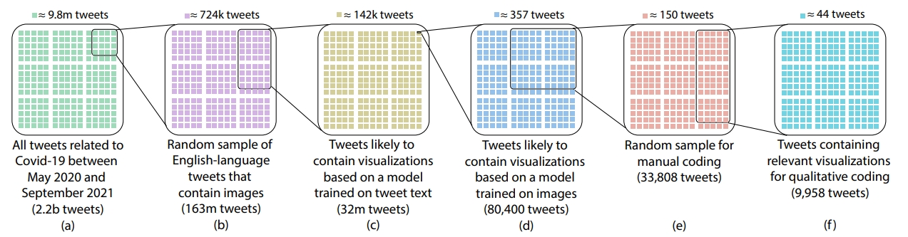
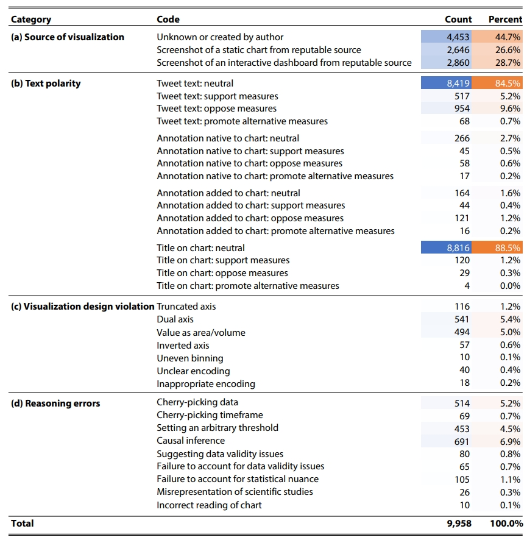
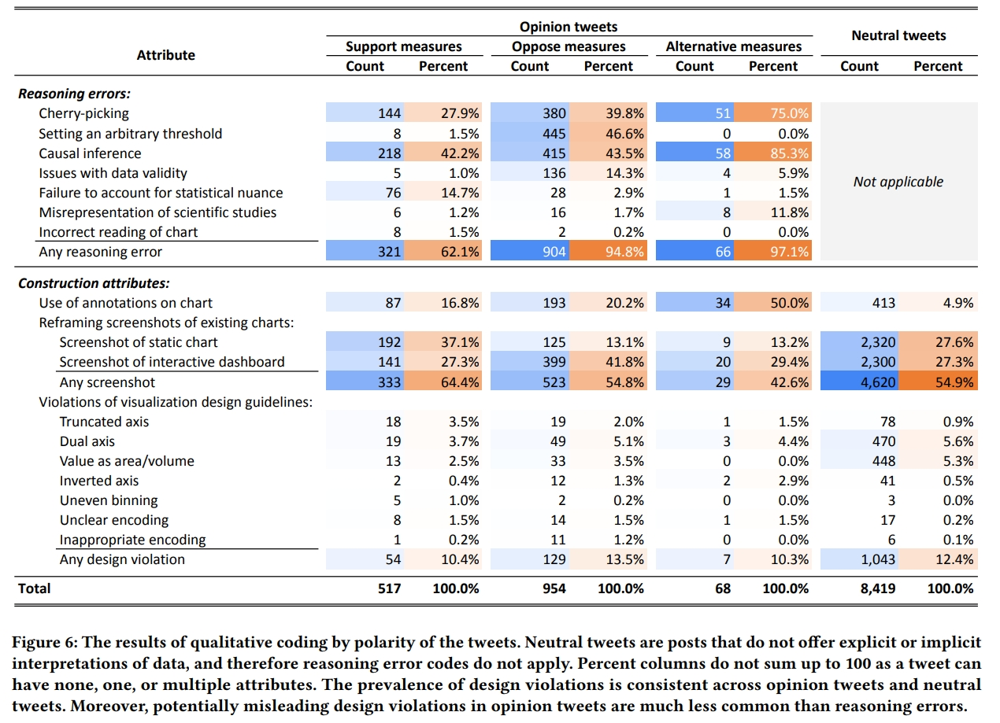
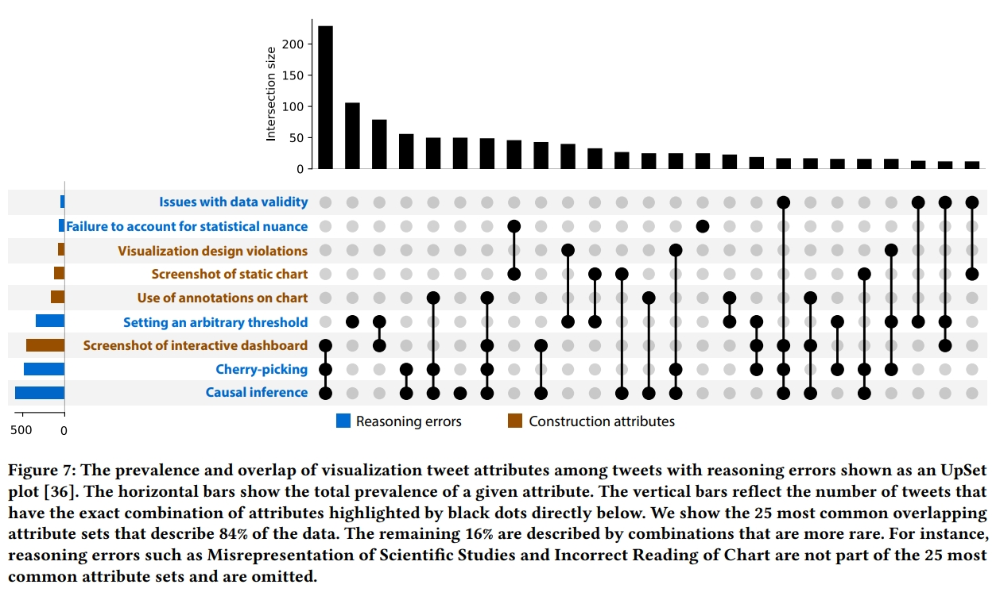
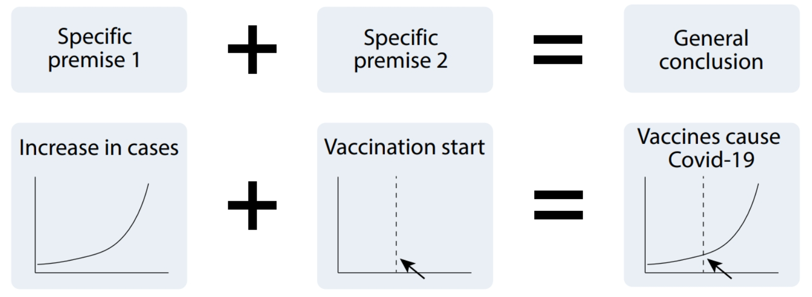

论文：Misleading Beyond Visual Tricks: How People Actually Lie with Charts
作者：Maxim Lisnic, Cole Polychronis, Alexander Lex, Marina Kogan
发表：CHI 2023
数据可视化可以使观众做出明智的决策。与此同时，对数据进行误导性呈现可能导致不准确的解释，同时仍然给人以数据驱动洞察的错觉。现有关于误导性可视化的研究主要集中在先前被报道为具有误导性的图表和技术的示例上。这些方法不一定描述了图表在实践中如何误导普通大众。相反，我们提供了对与 COVID-19 大流行相关的可视化在真实世界话语中的分析，即涉及 COVID-19 大流行的推特帖子中的可视化。我们的研究表明，与常识相反，违反可视化设计准则并不是人们误导图表的主要方式。具体而言，它们并没有在张贴者的论证中不成比例地导致推理错误。通过一系列示例，我们展示了常见的推理错误，并讨论了即使是忠实绘制的数据可视化也可以被用来支持错误信息的情况。
背景介绍
可视化社区主要将误导性可视化定义为干扰观看者准确阅读和比较数值能力的图表。这种类型的视觉欺骗根植于图表输入的数据点的真实值与观看者感知到的不同值之间的差距,这种差异被称为“谎言因子”。可视化社区已经详细研究了这些具有欺骗性的设计技术，并且 IEEE VIS 的长期卫星活动“VisLies” (www.vislies.org) 展示了一些最糟糕的例子。因此，传统智慧可能表明，用于在网上传播错误信息的可视化主要是那些使用这种视觉技巧的图表，并且可能暗示解决方案可能在于促进视觉素养，以便普通大众能够发现这些欺骗性技术。然而，更近期的研究表明，在许多情况下，对科学建制持怀疑态度的人提出了支持其观点的数据驱动论点，并使用了 Lee 等人描述的对抗性可视化：使用正统方法进行非正统论证的可视化。然而，什么使得可视化具有误导性或欺骗性，以及如何解决这个问题，仍然存在疑问。
本文的贡献有四点：
- 首次在大规模真实数据集上分析了可视化误导技术的普遍性。
- 引入了社交媒体上可视化误导信息属性的分类学。
- 提供了一个理论框架，以了解如何通过归纳推理的视角使用数据可视化来强化误导性论证。
- 提出了设计建议，以保护图表防止其被错误解读。
相关工作
- Online Misinformation
- Lee 的研究表明，不同的用户从相同的 COVID-19 可视化中会得出不同的结论。
- Zhang 的工作记录了许多 COVID-19 仪表盘和可视化设计师对他们的工作可能被误解或滥用的担忧。
- Misleading Visualizations
- Lee 等人的发现表明视觉错误信息主要是由社区之间的认识论差距驱动的，而不是视觉素养的差距。
- Dimara 等人的大规模文献综述显示，对可视化中的认知偏见的研究还很有限，现有的工作主要集中在影响从图表中估计值的偏见上。
方法
数据收集：
作者收集了 2020 年 5 月到 2021 年 9 月与新冠疫情相关的推文，总共有 22 亿条。
然后将完整的数据流过滤为仅包含英语推文且包含图像，并删除任何转发或回复
从中提取了两个数据集，一个为首周数据集用于训练数据处理的机器学习模型。
另一个则从剩余的数据中随机抽样，创建了一个包含 1.628 亿条推文的数据集，
先按照预测推文文本是否可能分享可视化通过在训练出的多项式朴素贝叶斯分类器进行预测
然后，用 Inception V3 模型，通过迁移学习的方法来判断图像是否为可视化
最后，将过滤后的数据随机采样去除错误标记的数据，得到最终数据集

定性编码：通过对这 9958 个帖子进行编码注释，创建出了编码手册。主要包含四个编码类别：来源信息、文本极性、是否违背可视化准则和常见的错误推理类型、通过推文文本来判断可视化图表是否被观众误解。

发现
定量概述：
- 可视化来源
- 媒体机构、政府网站和演示文稿以及数据探索网站的现有图表的截图（55%）
- 无法明确确定来源的数据可视化（45%）
- 文本极性
- 反对诸如口罩、封锁和疫苗接种等常规措施，或否认危机的存在或严重性（62%）
- 支持措施和政府干预（34%）
- 不积极反对措施，而是支持替代措施和药物（4%）
可视化设计违规（12%）
- 使用双坐标轴（5.4%）
- 将数量编码为面积或 3D 形状（5%）
- 截断坐标轴（1.2%）
- 反转坐标轴（0.6%）
- 其他杂项违规（0.5%）
误导性可视化的分类：
在这一部分，作者通过提供一种可视化帖子特征的分类方式，描述了能够识别为误导性的推文。这种分类是通过对相关代码进行分组得出的。根据两种类型的属性描述了每个帖子：其论点推理的属性，比如挑拡或不当的因果推断，以及帖子构建的属性，比如在图表上使用注释。这些属性并不是相互排斥的，每个帖子可能包含零个、一个或多个属性。实际上，正如下面更详细地讨论的那样，某些属性的组合可能会潜在地相互作用。图 6 总结了各个属性在不同极性中的普遍性，图 7 用 UpSet 图 展示了属性的频率和常见组合。


讨论
- 超过设计违规的可视化误导
- 仅有 12%的图表违反了可视化设计准则
- 花费更长的时间来仔细阅读图表可避免误解
- 设计不良的图表中仍然存在正确解读图表所需的信息
- 隐含前提使可视化易受误读
- 可视化误导类似于弱归纳推理
 可以通过可证伪性来无效化错误推论
设计建议
- 向图表添加一个非常显著的特征，使误导性论点不成立
- 突出显示有关数据注意事项和准确性的信息，并具有动态性
- 传达数据估计的不确定性，以防止观众对数据异常赋予误导性的含义
- 审查关于该主题的常见误解，并考虑可视化结果是否会用来于支持它们
限制
- 仅基于英文推特上与 COVID-19 大流行话题相关的数据
- 特定社交媒体平台的特性可能会对分享和广泛传播的内容类型产生影响
- 只能通过社交媒体追踪数据来识别明确的图表误解实例
未来工作
- 对误导性社交媒体帖子的回复进行形式化分析
- 探索将隐藏前提表示为图表的最佳方式
- 评估为易受曲解的可视化添加保护措施的有效性
✉️ zjuvis@cad.zju.edu.cn